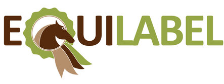

Victory Stables is een kleine, gezellige pensionstalling voor paarden in het hartje van de kempen.
Gelegen vlakbij het Albertkanaal en een bosrijke omgeving, is dit de ideale uitvalsbasis voor kilometers rijplezier.
De ambitieuze ruiter kan zich bij ons volledig ontplooien. Wij kunnen u begeleiden bij de aankoop van een paard, uit onze eigen fokkerij of extern, tot lessen en wedstrijdbegeleiding op maat.
Sinds 2015 hebben wij de eer om het 'Equilabel' te mogen dragen. Dit is een erkend certificaat die enkel uitgereikt wordt aan kwalitatieve maneges en pensionstallingen. Kortom kan u dus met een gerust hart uw geliefde viervoeter aan ons toevertrouwen.

Bekijk alvast onze verschillende pagina's om meer te weten te komen over onze bedrijvigheden en twijfel vooral niet om contact op te nemen bij eventuele vragen. Dit kan zowel telefonisch, per e-mail of via het
contactformulier.
Wij kijker er alvast naar uit om u snel te ontmoeten!